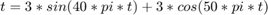
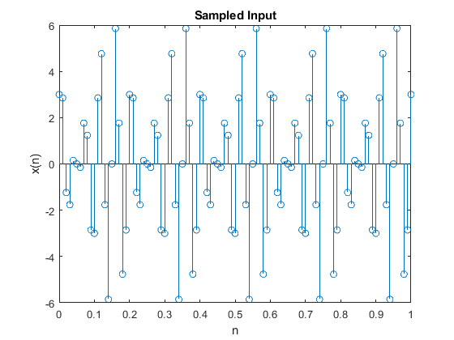
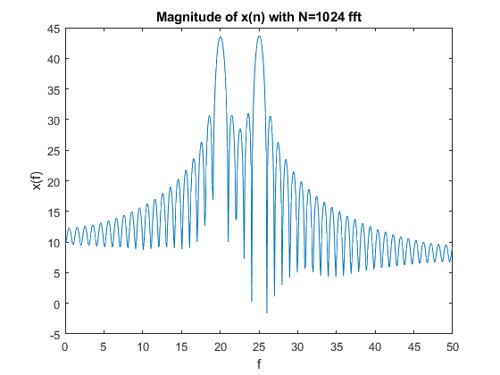
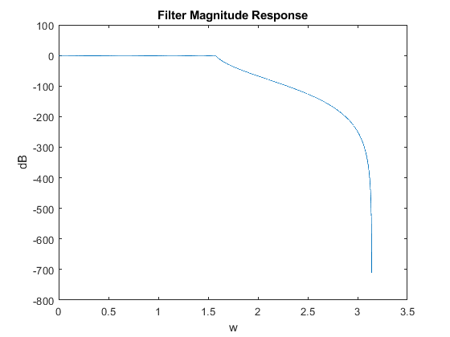
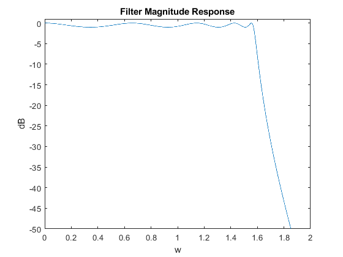
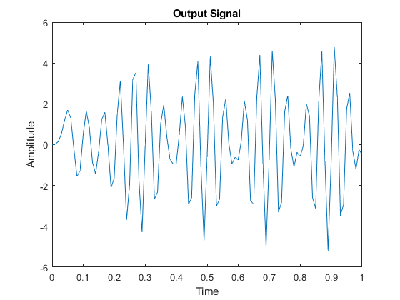
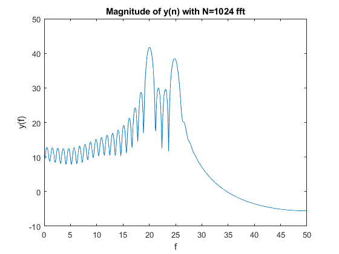

Designing an IIR Filter
Contents
- Establish the input analog signal
- Plot the input signal sampled at Ts
- Calculate the dB magnitude of the input analog signal where N = 1024
- Plot the sampled signal
- Implement the filter "Hd" designed in filterDesigner
- Plot the Filter's Magnitude Response
- Plot the Output Signal
- Calculate the dB Magnitude of the Output Signal with N = 1024
A minimum-order IIR filter is designed to process an analog input signal using MATLAB:

The filter is designed in filterDesigner and loaded into the MATLAB® workspace.
Establish the input analog signal
Fs = 100; Ts = 1/Fs; n = 0:Ts:1; x = 3*sin(40*pi*n)+3*cos(50*pi*n);
Plot the input signal sampled at Ts
stem(n,x); title('Sampled Input'); xlabel('n'); ylabel('x(n)');
Calculate the dB magnitude of the input analog signal where N = 1024
N = 1024; xfft = fft(x,N); f = linspace(0,Fs/2,N/2);
Plot the sampled signal
plot(f,20*log10(abs(xfft(1:N/2)))); title('Magnitude of x(n) with N=1024 fft'); xlabel('f'); ylabel('x(f)');
Implement the filter "Hd" designed in filterDesigner
load("filter9_5.mat")
y = filter(Hd,x);
[h,w]=freqz(Hd);
dB = mag2db(abs(h));
Plot the Filter's Magnitude Response
plot(w,dB); title('Filter Magnitude Response'); xlabel('w'); ylabel('dB');
Needs to be scaled properly:
ylim([-50 1]); xlim([0 2]);
Plot the Output Signal
plot(n,y); title('Output Signal'); xlabel('Time'); ylabel('Amplitude');
Calculate the dB Magnitude of the Output Signal with N = 1024
yfft = fft(y,N);
And plot:
plot(f,20*log10(abs(yfft(1:N/2)))); title('Magnitude of y(n) with N=1024 fft'); xlabel('f'); ylabel('y(f)');